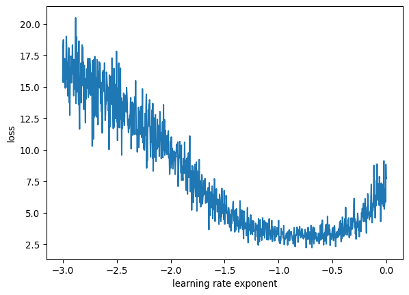
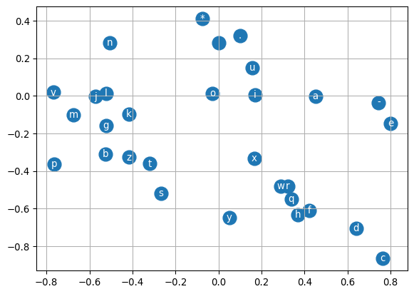
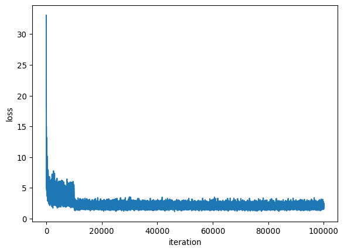
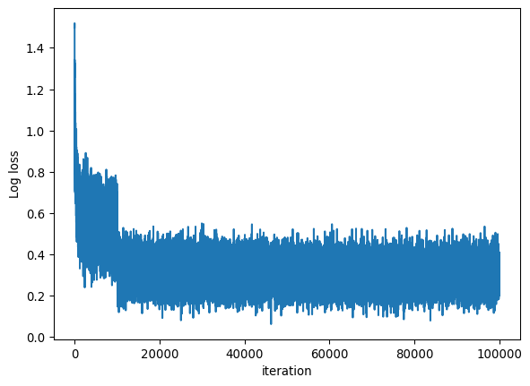
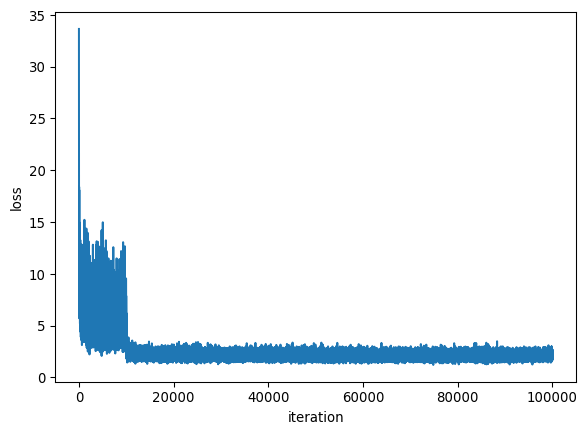
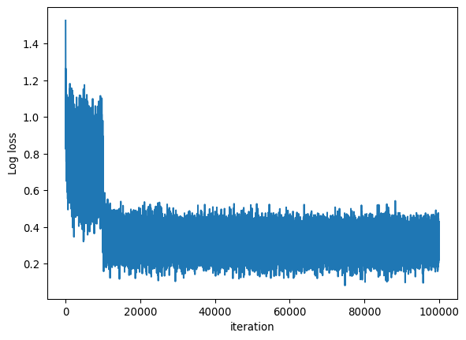

Developing a character-prediction n-gram model using MLP - version 2
Author
Shefali Lathwal
Published
June 12, 2025
Modified
June 12, 2025
In this notebook, we are going to improve on the character-level n-gram model that we built in version 1. In particular we are going to do the following: - Implement gradient descent on a mini-batch for the data instead of the whole dataset at once. - Split the data into training, validation and test sets - Visualize the final embedding vectors predicted by the model - Compare performance of the model from v1
Build the training dataset
Just like the Bengio et al. paper, let’s build a training dataset with three characters in context.
Remember that we have “.” on our training data itself. Therefore we are using a * to denote the beginning and end of words.
Our context is not a single character but a sequence of three characters. So each row in our xs training set would ba a list of three indices, and ys would be a single index
withopen("data/names.txt") asfile: text =file.read().splitlines()file.close()words = textlen(words)# Create the lookup for character indices including a start and end of line character to the all_chars listall_chars =sorted(list(set("".join(words)))+["*"])stoi = {s:i for i, s inenumerate(all_chars)}itos = {i:s for s, i in stoi.items()}stoi, itos
vocab_size =len(all_chars) # vocabulary size for characterscontext_length =3# no of characters in context for prediction# embedding vector length for each characterembed_size =2n_hidden =100# number of neurons in the hidden layer# min_batch_size = 32 # currently being set later in the notebook, move here.
import torchimport torch.nn.functional as Fxs, ys = [], []for word in words: chs ="*"*context_length+word+"*"#print(word)for ind inrange(len(chs) - context_length): ch1 = chs[ind:ind+context_length] ch2 = chs[ind+context_length]#print(f"{ch1} ----> {ch2}") xs.append([stoi[ch] for ch in ch1]) ys.append(stoi[ch2])xs = torch.tensor(xs) # 10X3ys = torch.tensor(ys) # 10num =len(ys)print("number of examples:", num)
number of examples: 505692
Train in minibatches instead of the whole dataset
We will sample a minibatch from the data instead of taking the whole data at every iteration of the gradient descent algorithm.
Initialize
g = torch.Generator().manual_seed(4524757136458)C = torch.randn(size = (vocab_size, embed_size), generator=g) # 30 X 2W1 = torch.randn(size = (context_length * embed_size,n_hidden), generator=g) # 6X100b1 = torch.randn(size = (n_hidden,), generator=g) # 100W2 = torch.randn(size = (n_hidden, vocab_size), generator=g) #100X30b2 = torch.rand(size = (vocab_size,), generator=g) #30parameters = [C, W1, b1, W2, b2]# collect all the parametersfor p in parameters: p.requires_grad =True
Train
n_iters =1000min_batch_size =32for _ inrange(n_iters):# construct minibatch by sampling indices from training dataset ix = torch.randint(0, num, (min_batch_size,), generator=g)# forward pass xemb = C[xs[ix]].view(min_batch_size, context_length*embed_size) # n_examplesX6 xh = (xemb @ W1 + b1).tanh() # n_examplesX100 logits = xh @ W2 + b2 # n_examplesXvocab_size loss = F.cross_entropy(logits, ys[ix])#print(f"{loss.item()}")# Backward passfor p in parameters: p.grad =None loss.backward()# Update parametersfor p in parameters: p.data +=-0.1*p.gradprint(loss.item())
2.728335380554199
The above loss is just for the minibatch Calculating loss for the entire data
Training loss after 1000 iterations with a learning rate of 0.1 for the entire dataset, where gradient descent is run on the entire dataset = 2.3811113834381104
Training loss after 1000 iterations with a learning rate of 0.1 for the entire dataset, where the gradient descent is run with mini-batch size of 32 = 2.5501720905303955, but the training is really fast, so we can go for much longer iterations.
Tuning the learning rate
Find a range empirically that works well. For example from 0.001 to 1. Find this range by just manually setting the rate for a few iterations and finding what the upper and lower limits are likely to be.
Run iterations slowly increasing the learning rate with each iteration over the range
Look at where the loss starts to increase
It will be a reasonable estimation of the learning rate.
Initialize
g = torch.Generator().manual_seed(4524757136458)C = torch.randn(size = (vocab_size, embed_size), generator=g) # 30 X 2W1 = torch.randn(size = (context_length * embed_size,n_hidden), generator=g) # 6X100b1 = torch.randn(size = (n_hidden,), generator=g) # 100W2 = torch.randn(size = (n_hidden, vocab_size), generator=g) #100X30b2 = torch.rand(size = (vocab_size,), generator=g) #30parameters = [C, W1, b1, W2, b2]# collect all the parametersfor p in parameters: p.requires_grad =True
n_iters =1000lossi = []for i inrange(n_iters):# construct minibatch by sampling indices from training dataset ix = torch.randint(0, num, (min_batch_size,), generator=g)# forward pass xemb = C[xs[ix]].view(min_batch_size, context_length*embed_size) # n_examplesX6 xh = (xemb @ W1 + b1).tanh() # n_examplesX100 logits = xh @ W2 + b2 # n_examplesXvocab_size loss = F.cross_entropy(logits, ys[ix])#print(f"{loss.item()}")# Backward passfor p in parameters: p.grad =None loss.backward() lossi.append(loss.item())# Update parameters lr = lri[i]for p in parameters: p.data +=-lr*p.grad#print(loss.item())
Plot the loss with the learning rate
import matplotlib.pyplot as pltimport numpy as npplt.plot(lre, lossi)plt.ylabel("loss")plt.xlabel("learning rate exponent")# index for min lossind_min_loss = np.argmin(lossi)ind_min_losslearning_rate = lri[ind_min_loss]learning_rate
tensor(0.1800)

The learning rate has come out to be 0.18
Initialize
g = torch.Generator().manual_seed(4524757136458)C = torch.randn(size = (vocab_size, embed_size), generator=g) # 30 X 2W1 = torch.randn(size = (context_length * embed_size,n_hidden), generator=g) # 6X100b1 = torch.randn(size = (n_hidden,), generator=g) # 100W2 = torch.randn(size = (n_hidden, vocab_size), generator=g) #100X30b2 = torch.rand(size = (vocab_size,), generator=g) #30parameters = [C, W1, b1, W2, b2]# collect all the parametersfor p in parameters: p.requires_grad =True
Train
n_iters =100000for i inrange(n_iters):# construct minibatch by sampling indices from training dataset ix = torch.randint(0, num, (min_batch_size,), generator=g)# forward pass xemb = C[xs[ix]].view(min_batch_size, context_length*embed_size) # n_examplesX6 xh = (xemb @ W1 + b1).tanh() # n_examplesX100 logits = xh @ W2 + b2 # n_examplesXvocab_size loss = F.cross_entropy(logits, ys[ix])if i%10000==0:print(f"Loss at iteration {i}:{loss.item()}")# Backward passfor p in parameters: p.grad =None loss.backward()# Update parametersif i <10000: lr = learning_rateelif10000<= i <50000: lr = learning_rate/10else: lr = learning_rate/100for p in parameters: p.data +=-lr*p.gradprint(f"{loss.item()}")#The above loss is just for the minibatch#Calculating loss for the entire dataxemb = C[xs].view(-1, context_length*embed_size) # n_examplesX6xh = (xemb @ W1 + b1).tanh() # n_examplesX100logits = xh @ W2 + b2 # n_examplesXvocab_sizeloss = F.cross_entropy(logits, ys)print("Loss for the whole dataset:", loss.item())
Loss at iteration 0:15.40669059753418
Loss at iteration 10000:1.945151448249817
Loss at iteration 20000:2.3145976066589355
Loss at iteration 30000:1.8188059329986572
Loss at iteration 40000:2.3086163997650146
Loss at iteration 50000:2.2232980728149414
Loss at iteration 60000:2.2149975299835205
Loss at iteration 70000:2.313100576400757
Loss at iteration 80000:2.1777288913726807
Loss at iteration 90000:2.0852653980255127
1.7409486770629883
Loss for the whole dataset: 2.1112160682678223
10000 iterations is not enough to completely train the model. It needs more iterations. Also, I have to reduce the learning rate after 10,000 iterations fo rthe model to continue converging smoothly.
The above loss is on the entire training dataset and we may be overfitting the training data. Therefore, to get a reasonable assessment of the loss of the model on unseen data, we should split our data into training, dev and test sets.
Split the data into training, validation and test sets
Define a function to build the X and Y tensors from the words list.
Define two integers, n1 and n2 at 80% of the word list and 90% of the word list.
Shuffle the words and extract data upto n1, from n1 to n2, and from n2 to end. These will become the training, dev and test datasets.
g = torch.Generator().manual_seed(4524757136458)C = torch.randn(size = (vocab_size, embed_size), generator=g) # 30 X 2W1 = torch.randn(size = (context_length * embed_size,n_hidden), generator=g) # 6X100b1 = torch.randn(size = (n_hidden,), generator=g) # 100W2 = torch.randn(size = (n_hidden, vocab_size), generator=g) #100X30b2 = torch.rand(size = (vocab_size,), generator=g) #30parameters = [C, W1, b1, W2, b2]# collect all the parametersfor p in parameters: p.requires_grad =Trueprint("Number of parameters:", sum(p.nelement() for p in parameters))
Number of parameters: 3790
Train
n_iters =100000for i inrange(n_iters):# construct minibatch by sampling indices from training dataset ix = torch.randint(0, xstr.shape[0], (min_batch_size,), generator=g)# forward pass xemb = C[xstr[ix]].view(min_batch_size, context_length*embed_size) # n_examplesX6 xh = (xemb @ W1 + b1).tanh() # n_examplesX100 logits = xh @ W2 + b2 # n_examplesXvocab_size loss = F.cross_entropy(logits, ystr[ix])if i%10000==0:print(f"Loss at iteration {i}:{loss.item()}")# Backward passfor p in parameters: p.grad =None loss.backward()# Update parametersif i <10000: lr = learning_rateelif10000<= i <50000: lr = learning_rate/10else: lr = learning_rate/100for p in parameters: p.data +=-lr*p.gradprint(f"{loss.item()}")#The above loss is just for the minibatch#Calculating loss for the entire training dataxemb = C[xstr].view(-1, context_length*embed_size) # n_examplesX6xh = (xemb @ W1 + b1).tanh() # n_examplesX100logits = xh @ W2 + b2 # n_examplesXvocab_sizeloss = F.cross_entropy(logits, ystr)print("Training loss:", loss.item())# Calculate loss for the dev dataxemb = C[xsdev].view(-1, context_length*embed_size) # n_examplesX6xh = (xemb @ W1 + b1).tanh() # n_examplesX100logits = xh @ W2 + b2 # n_examplesXvocab_sizeloss = F.cross_entropy(logits, ysdev)print("Validation loss:", loss.item())
Loss at iteration 0:15.612857818603516
Loss at iteration 10000:1.9876376390457153
Loss at iteration 20000:2.275438070297241
Loss at iteration 30000:2.3958239555358887
Loss at iteration 40000:2.202789545059204
Loss at iteration 50000:2.134326219558716
Loss at iteration 60000:2.078400135040283
Loss at iteration 70000:1.8983827829360962
Loss at iteration 80000:1.6612863540649414
Loss at iteration 90000:1.851075291633606
2.209160089492798
Training loss: 2.1094937324523926
Validation loss: 2.105466604232788
The training and validation loss are quite close to each other, being 2.11 and 2.12, respectively after 100,000 iterations with the above learning rates.
When training loss and validation loss are very similar, it indicates that our neural network is not overfitting on the training data, and there should be scope for improving it. Some strategies that we can use:
Increase the number of parameters in the neural network by increasing the number of neurons in the hidden layer.
Increase the embed_size to capture more information for each character
We can also take more than three characters in context
Experiment - increase the parameters in the hidden layer
Initialize
n_hidden =300g = torch.Generator().manual_seed(4524757136458)C = torch.randn(size = (vocab_size, embed_size), generator=g) # 30 X 2W1 = torch.randn(size = (context_length * embed_size,n_hidden), generator=g) # 6X100b1 = torch.randn(size = (n_hidden,), generator=g) # 100W2 = torch.randn(size = (n_hidden, vocab_size), generator=g) #100X30b2 = torch.rand(size = (vocab_size,), generator=g) #30parameters = [C, W1, b1, W2, b2]# collect all the parametersfor p in parameters: p.requires_grad =Trueprint("Number of parameters:", sum(p.nelement() for p in parameters))
Number of parameters: 11190
Train
n_iters =100000lossi = []for i inrange(n_iters):# construct minibatch by sampling indices from training dataset ix = torch.randint(0, xstr.shape[0], (min_batch_size,), generator=g)# forward pass xemb = C[xstr[ix]].view(min_batch_size, context_length*embed_size) # n_examplesX6 xh = (xemb @ W1 + b1).tanh() # n_examplesX100 logits = xh @ W2 + b2 # n_examplesXvocab_size loss = F.cross_entropy(logits, ystr[ix])if i%10000==0:print(f"Loss at iteration {i}:{loss.item()}")# Backward passfor p in parameters: p.grad =None loss.backward()# Update parametersif i <10000: lr = learning_rateelif10000<= i <50000: lr = learning_rate/10else: lr = learning_rate/100for p in parameters: p.data +=-lr*p.grad# track statistics lossi.append(loss.item())print(f"{loss.item()}")#The above loss is just for the minibatch#Calculating loss for the entire training dataxemb = C[xstr].view(-1, context_length*embed_size) # n_examplesX6xh = (xemb @ W1 + b1).tanh() # n_examplesX100logits = xh @ W2 + b2 # n_examplesXvocab_sizeloss = F.cross_entropy(logits, ystr)print("Training loss:", loss.item())# Calculate loss for the dev dataxemb = C[xsdev].view(-1, context_length*embed_size) # n_examplesX6xh = (xemb @ W1 + b1).tanh() # n_examplesX100logits = xh @ W2 + b2 # n_examplesXvocab_sizeloss = F.cross_entropy(logits, ysdev)print("Validation loss:", loss.item())
Loss at iteration 0:28.60953140258789
Loss at iteration 10000:2.6490871906280518
Loss at iteration 20000:1.8674166202545166
Loss at iteration 30000:2.413022041320801
Loss at iteration 40000:2.473870038986206
Loss at iteration 50000:1.7446247339248657
Loss at iteration 60000:1.949571967124939
Loss at iteration 70000:1.946211814880371
Loss at iteration 80000:1.7808773517608643
Loss at iteration 90000:2.0130503177642822
1.582410454750061
Training loss: 2.085326671600342
Validation loss: 2.083481788635254
The training and dev losses are now 2.09 and 2.10 respectively after 100,000 steps.
One of the reasons why the line is thick is because our batch size is quite small at 32. Therefore, there is a lot of jitter in the loss value.
Visualize the 2-D embedding vectors
embed_1 = C[:, 0].detach().numpy() # embedding in 1st dimensionembed_2 = C[:,1].detach().numpy() # embedding in 2nd dimension# plt.plot(C[:,0], C[:,1]) # This line creates an errorplt.scatter(embed_1, embed_2, s =200)for i inrange(C.shape[0]):#print(i) plt.text(embed_1[i], embed_2[i],s = itos[i], ha ="center", va ="center", color ="white")plt.grid("minor")

We can see that the vowels cluster together on the center right.
The start and end character clusters with the empty character.
Experiment - Increase the embedding vector size to 10
Initialize
n_hidden =300embed_size =10g = torch.Generator().manual_seed(4524757136458)C = torch.randn(size = (vocab_size, embed_size), generator=g) # 30 X 2W1 = torch.randn(size = (context_length * embed_size,n_hidden), generator=g) # 6X100b1 = torch.randn(size = (n_hidden,), generator=g) # 100W2 = torch.randn(size = (n_hidden, vocab_size), generator=g) #100X30b2 = torch.rand(size = (vocab_size,), generator=g) #30parameters = [C, W1, b1, W2, b2]# collect all the parametersfor p in parameters: p.requires_grad =Trueprint("Number of parameters:", sum(p.nelement() for p in parameters))
Number of parameters: 18630
Train
n_iters =100000lossi = []for i inrange(n_iters):# construct minibatch by sampling indices from training dataset ix = torch.randint(0, xstr.shape[0], (min_batch_size,), generator=g)# forward pass xemb = C[xstr[ix]].view(min_batch_size, context_length*embed_size) xh = (xemb @ W1 + b1).tanh() logits = xh @ W2 + b2 loss = F.cross_entropy(logits, ystr[ix])if i%10000==0:print(f"Loss at iteration {i}:{loss.item()}")# Backward passfor p in parameters: p.grad =None loss.backward()# Update parametersif i <10000: lr = learning_rateelif10000<= i <50000: lr = learning_rate/10else: lr = learning_rate/100for p in parameters: p.data +=-lr*p.grad# track statistics lossi.append(loss.item())print(f"{loss.item()}")#The above loss is just for the minibatch#Calculating loss for the entire training dataxemb = C[xstr].view(-1, context_length*embed_size) # n_examplesX6xh = (xemb @ W1 + b1).tanh() # n_examplesX100logits = xh @ W2 + b2 # n_examplesXvocab_sizeloss = F.cross_entropy(logits, ystr)print("Training loss:", loss.item())# Calculate loss for the dev dataxemb = C[xsdev].view(-1, context_length*embed_size) # n_examplesX6xh = (xemb @ W1 + b1).tanh() # n_examplesX100logits = xh @ W2 + b2 # n_examplesXvocab_sizeloss = F.cross_entropy(logits, ysdev)print("Validation loss:", loss.item())
Loss at iteration 0:31.608505249023438
Loss at iteration 10000:2.695669174194336
Loss at iteration 20000:2.0951366424560547
Loss at iteration 30000:2.1647281646728516
Loss at iteration 40000:2.392338752746582
Loss at iteration 50000:2.2158310413360596
Loss at iteration 60000:1.8899933099746704
Loss at iteration 70000:2.029717206954956
Loss at iteration 80000:2.3228707313537598
Loss at iteration 90000:2.008964776992798
1.963722586631775
Training loss: 2.0424036979675293
Validation loss: 2.054600715637207
The training and dev losses are now 2.044 and 2.069 respectively after 100,000 steps.
plt.figure()plt.plot(np.arange(n_iters), lossi)plt.xlabel("iteration")plt.ylabel("loss")# It can also be useful to plot logloss instead of lossplt.figure()plt.plot(np.arange(n_iters), np.log10(lossi))plt.xlabel("iteration")plt.ylabel("Log loss")
Text(0, 0.5, 'Log loss')


Sample from the model
start_char ="*"end_char ="*"g = torch.Generator().manual_seed(123434)start_ind = stoi[start_char]for _ inrange(20): context = [start_ind]*context_length all_chars = [start_char]*context_lengthwhileTrue: # Now context contains the three character indices for our example xembp = C[torch.tensor(context)].view(1, -1) # Want to generate just one character at a time. xhp = (xembp @ W1 + b1).tanh() logitsp = xhp @ W2 + b2 # Directly use the softmax function to calculate probabilites from logits probsp = F.softmax(logitsp, dim =1) ind = torch.multinomial(probsp, num_samples =1, replacement =True, generator = g) ch = itos[ind.item()]if (ch == end_char): all_chars.append(ch)breakelse: all_chars.append(ch) context = context[1:]+[ind.item()]print("".join(all_chars))
n_hidden =300embed_size =10g = torch.Generator().manual_seed(4524757136458)C = torch.randn(size = (vocab_size, embed_size), generator=g) # 30 X 2W1 = torch.randn(size = (context_length * embed_size,n_hidden), generator=g) # 6X100b1 = torch.randn(size = (n_hidden,), generator=g) # 100W2 = torch.randn(size = (n_hidden, vocab_size), generator=g) #100X30b2 = torch.rand(size = (vocab_size,), generator=g) #30parameters = [C, W1, b1, W2, b2]# collect all the parametersfor p in parameters: p.requires_grad =Trueprint("Number of parameters:", sum(p.nelement() for p in parameters))
Number of parameters: 27630
Train
n_iters =100000lossi = []for i inrange(n_iters):# construct minibatch by sampling indices from training dataset ix = torch.randint(0, xstr.shape[0], (min_batch_size,), generator=g)# forward pass xemb = C[xstr[ix]].view(min_batch_size, context_length*embed_size) xh = (xemb @ W1 + b1).tanh() logits = xh @ W2 + b2 loss = F.cross_entropy(logits, ystr[ix])if i%10000==0:print(f"Loss at iteration {i}:{loss.item()}")# Backward passfor p in parameters: p.grad =None loss.backward()# Update parametersif i <10000: lr = learning_rateelif10000<= i <50000: lr = learning_rate/10else: lr = learning_rate/100for p in parameters: p.data +=-lr*p.grad# track statistics lossi.append(loss.item())print(f"{loss.item()}")#The above loss is just for the minibatch#Calculating loss for the entire training dataxemb = C[xstr].view(-1, context_length*embed_size) # n_examplesX6xh = (xemb @ W1 + b1).tanh() # n_examplesX100logits = xh @ W2 + b2 # n_examplesXvocab_sizeloss = F.cross_entropy(logits, ystr)print("Training loss:", loss.item())# Calculate loss for the dev dataxemb = C[xsdev].view(-1, context_length*embed_size) # n_examplesX6xh = (xemb @ W1 + b1).tanh() # n_examplesX100logits = xh @ W2 + b2 # n_examplesXvocab_sizeloss = F.cross_entropy(logits, ysdev)print("Validation loss:", loss.item())
Loss at iteration 0:33.63624954223633
Loss at iteration 10000:5.671252250671387
Loss at iteration 20000:1.910980463027954
Loss at iteration 30000:2.230699062347412
Loss at iteration 40000:2.423450469970703
Loss at iteration 50000:1.8556514978408813
Loss at iteration 60000:2.076598882675171
Loss at iteration 70000:2.005889654159546
Loss at iteration 80000:2.2849373817443848
Loss at iteration 90000:2.453106641769409
2.0403006076812744
Training loss: 2.081007242202759
Validation loss: 2.0885376930236816
The training and dev losses are now 2.064 and 2.083 respectively after 100,000 steps. The losses have actually increased by increasing the context length. Therefore, context length is not likely a bottleneck in our model.
plt.figure()plt.plot(np.arange(n_iters), lossi)plt.xlabel("iteration")plt.ylabel("loss")# It can also be useful to plot logloss instead of lossplt.figure()plt.plot(np.arange(n_iters), np.log10(lossi))plt.xlabel("iteration")plt.ylabel("Log loss")
Text(0, 0.5, 'Log loss')


Sample from the model
start_char ="*"end_char ="*"g = torch.Generator().manual_seed(123434)start_ind = stoi[start_char]for _ inrange(20): context = [start_ind]*context_length all_chars = [start_char]*context_lengthwhileTrue: # Now context contains the three character indices for our example xembp = C[torch.tensor(context)].view(1, -1) # Want to generate just one character at a time. xhp = (xembp @ W1 + b1).tanh() logitsp = xhp @ W2 + b2 # Directly use the softmax function to calculate probabilites from logits probsp = F.softmax(logitsp, dim =1) ind = torch.multinomial(probsp, num_samples =1, replacement =True, generator = g) ch = itos[ind.item()]if (ch == end_char): all_chars.append(ch)breakelse: all_chars.append(ch) context = context[1:]+[ind.item()]print("".join(all_chars))